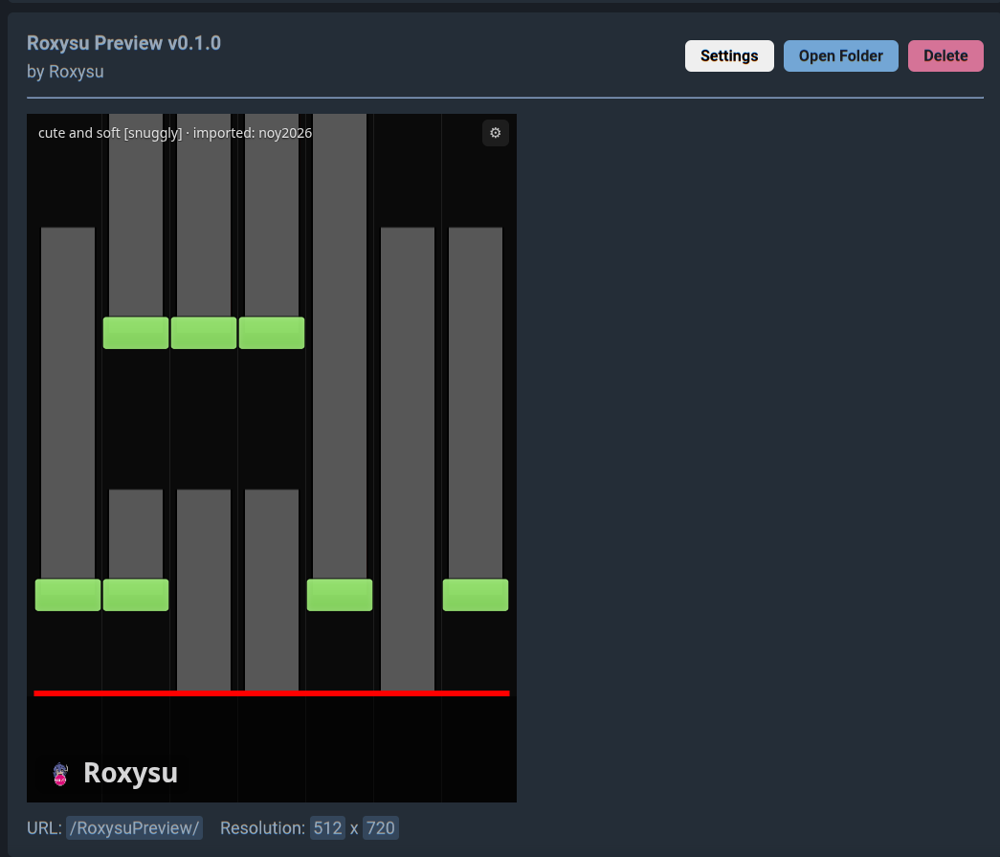
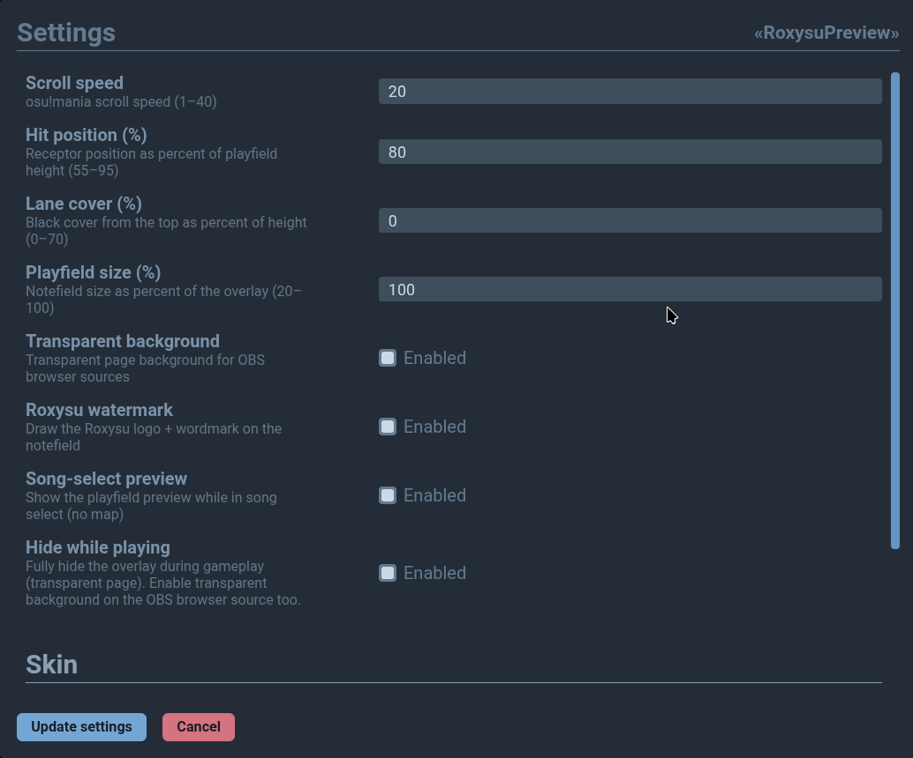
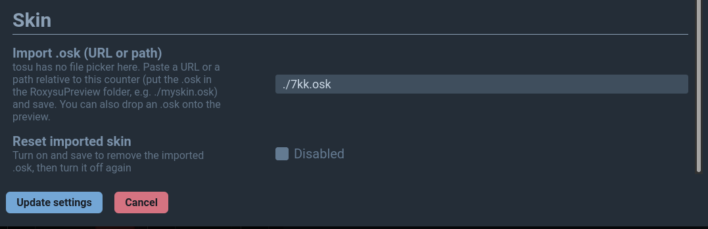

Osu!mania only
Only the osu!mania game mode is supported. Other game modes are not currently supported.
Tosu counter
Roxysu Preview is a standalone mania notefield overlay for Tosu. It follows the map you’re playing in osu! — no Roxysu app install required.

What it is
The counter talks only to Tosu: it reads the live map and paints a
mania playfield — receptors, notes, lane cover, and your imported
skin. Use it in the Tosu dashboard or as an OBS browser source at
/RoxysuPreview/.
Only the osu!mania game mode is supported. Other game modes are not currently supported.
Scrolls with in-game time, including Invert, Hold Off, and Mirror.
Transparent background, playfield scale, and hide-while-playing for browser sources.
Drop a .osk next to the counter and name it in the Tosu dashboard settings.
Install
Tosu loads counters from its static folder. Roxysu Preview
is just another folder you drop in there.
Setup
RoxysuPreview.zip from the
v0.1.14 release.
RoxysuPreview.static directory — the same
place every other Tosu counter lives.
After install, the overlay URL is /RoxysuPreview/ (512×720).
Point an OBS browser source at it if you want it on stream.
Settings
Open RoxysuPreview → Settings. Values save in Tosu and apply live. You can also use the gear on the preview itself as a fallback.

osu!mania scroll speed, from 1 to 40.
Receptor line as a percent of playfield height (55–95).
Black cover from the top of the playfield (0–70).
Notefield size relative to the overlay (20–100).
Clear the page background so OBS can key the overlay.
Draw the Roxysu logo and wordmark on the notefield.
Keep the playfield visible in song select when no map is loaded.
Fully hide the overlay during gameplay. Enable transparent background on the OBS browser source too.
Skin
Tosu’s dashboard has no file picker, so the skin file has to sit next to the counter. Then you type the filename in settings.
.osk inside Tosu’s
static/RoxysuPreview/ folder — the same folder you
copied in during install.
myskin.osk or ./myskin.osk.
To remove a skin, turn on Reset imported skin, save,
then turn it off again. You can also drop an .osk onto
the preview itself when you’re not in OBS.
